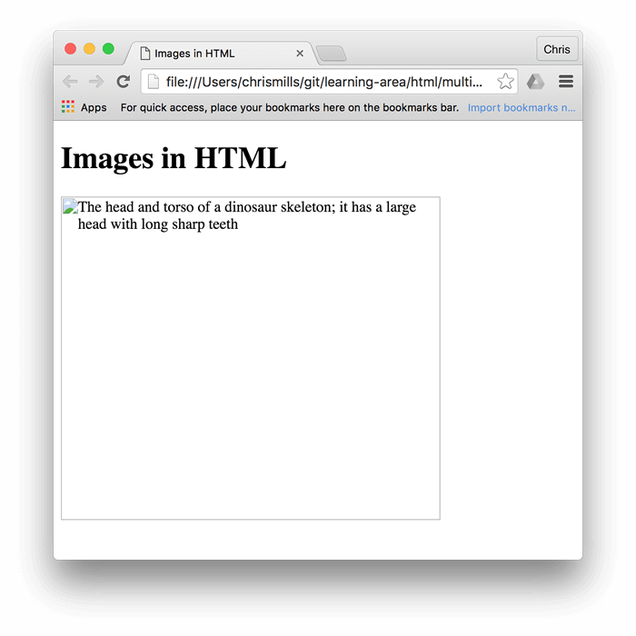

In the beginning, the Web was just text, and it was really quite boring. Fortunately, it wasn't too long before the ability to embed images (and other more interesting types of content) inside web pages was added. There are other types of multimedia to consider, but it is logical to start with the humble <img> element, used to embed a simple image in a webpage. In this article we'll look at how to use it in depth, including the basics, annotating it with captions using <figure>, and detailing how it relates to CSS background images.
| Prerequisites: | Basic computer literacy, basic software installed, basic knowledge of working with files, familiarity with HTML fundamentals (as covered in Getting started with HTML.) |
|---|---|
| Objective: | To learn how to embed simple images in HTML, annotate them with captions, and how HTML images relate to CSS background images. |
How do we put an image on a webpage?
In order to put a simple image on a webpage, we use the <img> element. This is an empty element (meaning that it has no text content or closing tag) that requires a minimum of one attribute to be useful — src (sometimes spoken as its full title, source). The src attribute contains a path pointing to the image you want to embed in the page, which can be a relative or absolute URL, in the same way as <a> element href attribute values.
Note: You should read A quick primer on URLs and paths to refresh your memory on relative and absolute URLs before continuing.
So for example, if your image is called dinosaur.jpg, and it sits in the same directory as your HTML page, you could embed the image like so:
<img src="dinosaur.jpg">
If the image was in an images subdirectory, which was inside the same directory as the HTML page (which Google recommends for SEO/indexing purposes), then you'd embed it like this:
<img src="images/dinosaur.jpg">
And so on.
Note: Search engines also read image filenames and count them towards SEO. Therefore, give your image a descriptive filename; dinosaur.jpg is better than img835.png.
You could embed the image using its absolute URL, for example:
<img src="https://www.example.com/images/dinosaur.jpg">
But this is pointless, as it just makes the browser do more work, looking up the IP address from the DNS server all over again, etc. You'll almost always keep the images for your website on the same server as your HTML.
Warning: Most images are copyrighted. Do not display an image on your webpage unless:
1) you own the image
2) you have received explicit, written permission from the image's owner, or
3) you have ample proof that the image is, in fact, in the public domain.
Copyright violations are illegal and unethical. In addition, never point your src attribute at an image hosted on someone else's website that you don't have permission to link to. This is called "hotlinking". Again, stealing someone's bandwidth is illegal. It also slows down your page, leaving you with no control over whether the image is removed or replaced with something embarrassing.
Our above code would give us the following result:

Note: Elements like <img> and <video> are sometimes referred to as replaced elements. This is because the element's content and size are defined by an external resource (like an image or video file), not by the contents of the element itself.
Note: You can find the finished example from this section running on Github (see the source code too.)
Alternative text
The next attribute we'll look at is alt. Its value is supposed to be a textual description of the image, for use in situations where the image cannot be seen/displayed. For example, our above code could be modified like so:
<img src="images/dinosaur.jpg"
alt="The head and torso of a dinosaur skeleton;
it has a large head with long sharp teeth">
The easiest way to test your alt text is to purposely misspell your filename. If for example our image name was spelled dinosooooor.jpg, the browser wouldn't display the image, and display the alt text instead:

So, why would you ever see or need alt text? It can come in handy for a number of reasons:
- The user is visually impaired, and using a screen reader to read the web out to them. In fact, having alt text available to describe images is useful to most users.
- As described above, the spelling of the file or path name might be wrong
- The browser doesn't support the image type. Some people still use text-only browsers, such as Lynx, which displays the alt text of images.
- You may want to provide text for search engines to utilize; for example, search engines can match alt text with search queries
- Users have turned off images to reduce data transfer volume and distractions. This is especially common on mobile phones, and in countries where bandwidth is limited or expensive.
What exactly should you write inside your alt attribute? It depends on why the image is there in the first place. In other words, what you lose if your image doesn't show up:
- Decoration. You should use CSS background images for decorative images, but if you must use HTML, add a blank
alt="". If the image isn't part of the content, a screen reader shouldn't waste time reading it. - Content. If your image provides significant information, provide the same information in a brief
alttext – or even better, in the main text which everybody can see. Don't write redundantalttext. How annoying would it be for a sighted user if all paragraphs were written twice in the main content? If the image is described adequately by the main text body, you can just usealt="". - Link. If you put an image inside
<a>tags, to turn an image into a link, you still must provide accessible link text. In such cases you may, either, write it inside the same<a>element, or inside the image'saltattribute – whichever works best in your case. - Text. You should not put your text into images. If your main heading needs a drop shadow, for example, use CSS for that rather than putting the text into an image. However, If you really can't avoid doing this, you should supply the text inside the
altattribute.
Essentially, the key is to deliver a usable experience, even when the images can't be seen. This ensures all users are not missing any of the content. Try turning off images in your browser and see how things look. You'll soon realize how helpful alt text is if the image cannot be seen.
Note: For more information, see our guide to Text Alternatives.
Width and height
You can use the width and height attributes to specify the width and height of your image. You can find your image's width and height in a number of ways. For example on the Mac you can use Cmd + I to get the info display up for the image file. Returning to our example, we could do this:
<img src="images/dinosaur.jpg"
alt="The head and torso of a dinosaur skeleton;
it has a large head with long sharp teeth"
width="400"
height="341">
This doesn't result in much difference to the display, under normal circumstances. But if the image isn't being displayed, for example, the user has just navigated to the page, and the image hasn't yet loaded, you'll notice the browser is leaving a space for the image to appear in:

This is a good thing to do, resulting in the page loading quicker and more smoothly.
However, you shouldn't alter the size of your images using HTML attributes. If you set the image size too big, you'll end up with images that look grainy, fuzzy, or too small, and wasting bandwidth downloading an image that is not fitting the user's needs. The image may also end up looking distorted, if you don't maintain the correct aspect ratio. You should use an image editor to put your image at the correct size before putting it on your webpage.
Note: If you do need to alter an image's size, you should use CSS instead.
Image titles
As with links, you can also add title attributes to images, to provide further supporting information if needed. In our example, we could do this:
<img src="images/dinosaur.jpg"
alt="The head and torso of a dinosaur skeleton;
it has a large head with long sharp teeth"
width="400"
height="341"
title="A T-Rex on display in the Manchester University Museum">
This gives us a tooltip on mouse hover, just like link titles:

However, this does not come recommended — title has a number of accessibility problems, mainly based around the fact that screen reader support is very unpredictable and most browsers won't show it unless you are hovering with a mouse (so e.g. no access to keyboard users). If you are interested in more information about this, read The Trials and Tribulations of the Title Attribute by Scott O'Hara.
It is better to include such supporting information in the main article text, rather than attached to the image.
Active learning: embedding an image
It is now your turn to play! This active learning section will have you up and running with a simple embedding exercise. You are provided with a basic <img> tag; we'd like you to embed the image located at the following URL:
https://raw.githubusercontent.com/mdn/learning-area/master/html/multimedia-and-embedding/images-in-html/dinosaur_small.jpg
Earlier we said to never hotlink to images on other servers, but this is just for learning purposes, so we'll let you off this one time.
We would also like you to:
- Add some alt text, and check that it works by misspelling the image URL.
- Set the image's correct
widthandheight(hint; it is 200px wide and 171px high), then experiment with other values to see what the effect is. - Set a
titleon the image.
If you make a mistake, you can always reset it using the Reset button. If you get really stuck, press the Show solution button to see an answer:
Playable code
<h2>Live output</h2> <div class="output" style="min-height: 50px;"> </div> <h2>Editable code</h2> <p class="a11y-label">Press Esc to move focus away from the code area (Tab inserts a tab character).</p> <textarea id="code" class="input" style="min-height: 100px; width: 95%"> <img> </textarea> <div class="playable-buttons"> <input id="reset" type="button" value="Reset"> <input id="solution" type="button" value="Show solution"> </div>
html {
font-family: sans-serif;
}
h2 {
font-size: 16px;
}
.a11y-label {
margin: 0;
text-align: right;
font-size: 0.7rem;
width: 98%;
}
body {
margin: 10px;
background: #f5f9fa;
}
var textarea = document.getElementById('code');
var reset = document.getElementById('reset');
var solution = document.getElementById('solution');
var output = document.querySelector('.output');
var code = textarea.value;
var userEntry = textarea.value;
function updateCode() {
output.innerHTML = textarea.value;
}
reset.addEventListener('click', function() {
textarea.value = code;
userEntry = textarea.value;
solutionEntry = htmlSolution;
solution.value = 'Show solution';
updateCode();
});
solution.addEventListener('click', function() {
if(solution.value === 'Show solution') {
textarea.value = solutionEntry;
solution.value = 'Hide solution';
} else {
textarea.value = userEntry;
solution.value = 'Show solution';
}
updateCode();
});
var htmlSolution = '<img src="https://raw.githubusercontent.com/mdn/learning-area/master/html/multimedia-and-embedding/images-in-html/dinosaur_small.jpg"\n alt="The head and torso of a dinosaur skeleton; it has a large head with long sharp teeth"\n width="200"\n height="171"\n title="A T-Rex on display in the Manchester University Museum">';
var solutionEntry = htmlSolution;
textarea.addEventListener('input', updateCode);
window.addEventListener('load', updateCode);
// stop tab key tabbing out of textarea and
// make it write a tab at the caret position instead
textarea.onkeydown = function(e){
if (e.keyCode === 9) {
e.preventDefault();
insertAtCaret('\t');
}
if (e.keyCode === 27) {
textarea.blur();
}
};
function insertAtCaret(text) {
var scrollPos = textarea.scrollTop;
var caretPos = textarea.selectionStart;
var front = (textarea.value).substring(0, caretPos);
var back = (textarea.value).substring(textarea.selectionEnd, textarea.value.length);
textarea.value = front + text + back;
caretPos = caretPos + text.length;
textarea.selectionStart = caretPos;
textarea.selectionEnd = caretPos;
textarea.focus();
textarea.scrollTop = scrollPos;
}
// Update the saved userCode every time the user updates the text area code
textarea.onkeyup = function(){
// We only want to save the state when the user code is being shown,
// not the solution, so that solution is not saved over the user code
if(solution.value === 'Show solution') {
userEntry = textarea.value;
} else {
solutionEntry = textarea.value;
}
updateCode();
};
Annotating images with figures and figure captions
Speaking of captions, there are a number of ways that you could add a caption to go with your image. For example, there would be nothing to stop you doing this:
<div class="figure">
<img src="images/dinosaur.jpg"
alt="The head and torso of a dinosaur skeleton;
it has a large head with long sharp teeth"
width="400"
height="341">
<p>A T-Rex on display in the Manchester University Museum.</p>
</div>
This is ok. It contains the content you need, and is nicely stylable using CSS. But there is a problem here: there is nothing that semantically links the image to its caption, which can cause problems for screen readers. For example, when you have 50 images and captions, which caption goes with which image?
A better solution, is to use the HTML5 <figure> and <figcaption> elements. These are created for exactly this purpose: to provide a semantic container for figures, and clearly link the figure to the caption. Our above example could be rewritten like this:
<figure>
<img src="images/dinosaur.jpg"
alt="The head and torso of a dinosaur skeleton;
it has a large head with long sharp teeth"
width="400"
height="341">
<figcaption>A T-Rex on display in the Manchester University Museum.</figcaption>
</figure>
The <figcaption> element tells browsers, and assistive technology that the caption describes the other content of the <figure> element.
Note: From an accessibility viewpoint, captions and alt text have distinct roles. Captions benefit even people who can see the image, whereas alt text provides the same functionality as an absent image. Therefore, captions and alt text shouldn't just say the same thing, because they both appear when the image is gone. Try turning images off in your browser and see how it looks.
A figure doesn't have to be an image. It is an independent unit of content that:
- Expresses your meaning in a compact, easy-to-grasp way.
- Could go in several places in the page's linear flow.
- Provides essential information supporting the main text.
A figure could be several images, a code snippet, audio, video, equations, a table, or something else.
Active learning: creating a figure
In this active learning section, we'd like you to take the finished code from the previous active learning section, and turn it into a figure:
- Wrap it in a
<figure>element. - Copy the text out of the
titleattribute, remove thetitleattribute, and put the text inside a<figcaption>element below the image.
If you make a mistake, you can always reset it using the Reset button. If you get really stuck, press the Show solution button to see an answer:
Playable code 2
<h2>Live output</h2> <div class="output" style="min-height: 50px;"> </div> <h2>Editable code</h2> <p class="a11y-label">Press Esc to move focus away from the code area (Tab inserts a tab character).</p> <textarea id="code" class="input" style="min-height: 100px; width: 95%"> </textarea> <div class="playable-buttons"> <input id="reset" type="button" value="Reset"> <input id="solution" type="button" value="Show solution"> </div>
html {
font-family: sans-serif;
}
h2 {
font-size: 16px;
}
.a11y-label {
margin: 0;
text-align: right;
font-size: 0.7rem;
width: 98%;
}
body {
margin: 10px;
background: #f5f9fa;
}
var textarea = document.getElementById('code');
var reset = document.getElementById('reset');
var solution = document.getElementById('solution');
var output = document.querySelector('.output');
var code = textarea.value;
var userEntry = textarea.value;
function updateCode() {
output.innerHTML = textarea.value;
}
reset.addEventListener('click', function() {
textarea.value = code;
userEntry = textarea.value;
solutionEntry = htmlSolution;
solution.value = 'Show solution';
updateCode();
});
solution.addEventListener('click', function() {
if(solution.value === 'Show solution') {
textarea.value = solutionEntry;
solution.value = 'Hide solution';
} else {
textarea.value = userEntry;
solution.value = 'Show solution';
}
updateCode();
});
var htmlSolution = '<figure>\n <img src="https://raw.githubusercontent.com/mdn/learning-area/master/html/multimedia-and-embedding/images-in-html/dinosaur_small.jpg"\n alt="The head and torso of a dinosaur skeleton; it has a large head with long sharp teeth"\n width="200"\n height="171">\n <figcaption>A T-Rex on display in the Manchester University Museum</figcaption>\n</figure>';
var solutionEntry = htmlSolution;
textarea.addEventListener('input', updateCode);
window.addEventListener('load', updateCode);
// stop tab key tabbing out of textarea and
// make it write a tab at the caret position instead
textarea.onkeydown = function(e){
if (e.keyCode === 9) {
e.preventDefault();
insertAtCaret('\t');
}
if (e.keyCode === 27) {
textarea.blur();
}
};
function insertAtCaret(text) {
var scrollPos = textarea.scrollTop;
var caretPos = textarea.selectionStart;
var front = (textarea.value).substring(0, caretPos);
var back = (textarea.value).substring(textarea.selectionEnd, textarea.value.length);
textarea.value = front + text + back;
caretPos = caretPos + text.length;
textarea.selectionStart = caretPos;
textarea.selectionEnd = caretPos;
textarea.focus();
textarea.scrollTop = scrollPos;
}
// Update the saved userCode every time the user updates the text area code
textarea.onkeyup = function(){
// We only want to save the state when the user code is being shown,
// not the solution, so that solution is not saved over the user code
if(solution.value === 'Show solution') {
userEntry = textarea.value;
} else {
solutionEntry = textarea.value;
}
updateCode();
};
CSS background images
You can also use CSS to embed images into webpages (and JavaScript, but that's another story entirely). The CSS background-image property, and the other background-* properties, are used to control background image placement. For example, to place a background image on every paragraph on a page, you could do this:
p {
background-image: url("images/dinosaur.jpg");
}
The resulting embedded image, is arguably easier to position and control than HTML images. So why bother with HTML images? As hinted to above, CSS background images are for decoration only. If you just want to add something pretty to your page to enhance the visuals, this is fine. Though, such images have no semantic meaning at all. They can't have any text equivalents, are invisible to screen readers, etc. This is HTML images time to shine!
Summing up: if an image has meaning, in terms of your content, you should use an HTML image. If an image is purely decoration, you should use CSS background images.
Note: You'll learn a lot more about CSS background images in our CSS topic.
That's all for now. We have covered images and captions in detail. In the next article we'll move it up a gear, looking at how to use HTML to embed video and audio in web pages.